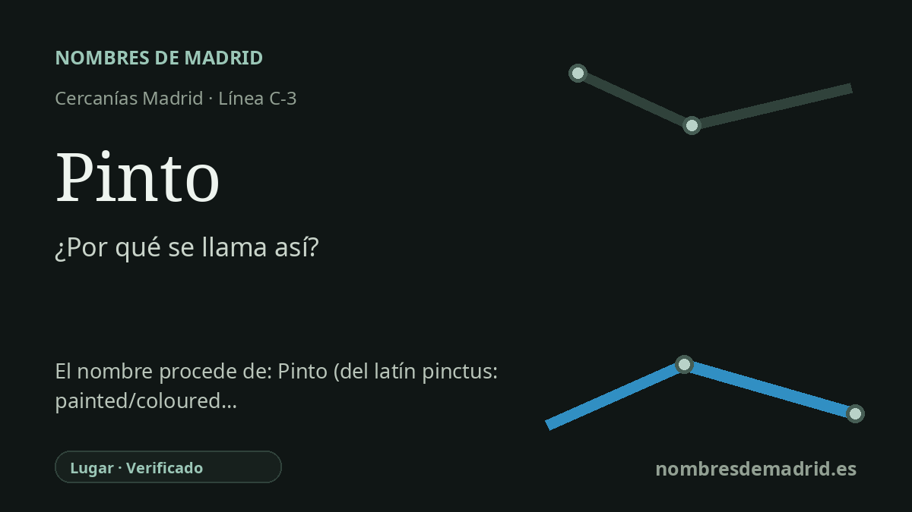

Publicado el · Investigación de Nombres de Madrid · Cómo verificamos cada origen · 6 fuentes consultadas
Respuesta rápida
La estación de Pinto toma su nombre del municipio al que sirve. La evidencia toponímica más sólida apunta al latín *pincta/*pinctu, 'pintado' o 'coloreado', y no a la explicación popular desde punctum, 'punto'.
La historia del nombre
La estación de Pinto tiene un nombre local directo: es la estación de Cercanías C-3 que sirve al municipio de Pinto, al sur de Madrid. La ficha de Renfe registra la parada como PINTO, la sitúa en el municipio de Pinto y la vincula con la línea C-3, mientras que el Consorcio Regional de Transportes presenta la misma estación con acceso por la calle del Ferrocarril. Para el ferrocarril, por tanto, la cadena inmediata del nombre no ofrece mucha duda. La estación toma el nombre de la villa en la que se encuentra.
La cuestión más antigua y más interesante es qué significa el topónimo Pinto. Una tradición local muy conocida lo relaciona con *punctum*, "punto", a menudo dentro de la idea de que Pinto marca el centro de la Península Ibérica o un lugar de cruce relevante. Esa tradición forma parte de la memoria histórica y simbólica del municipio, y aparece en relatos municipales y periodísticos. Es un contexto cultural útil, pero no es la explicación etimológica más sólida en la investigación actual.
La lectura académica más fuerte apunta más bien a un adjetivo latino o romance de color: *pincta*, *pinctu* o *pinctus*, con el sentido de "pintado", "coloreado" o "de cierto color". Toponomasticon Hispaniae trata Pinto como un topónimo de origen latino con valor cromático, y Jairo J. Garcia Sanchez propone la misma dirección general. Según esta interpretación, Pinto conservaría un adjetivo que en origen describía algún rasgo local: quizá una tierra, una piedra, unas aguas, una ladera u otro sustantivo paisajístico que después desapareció del nombre.
Ese sustantivo perdido es la principal incertidumbre. Las fuentes no permiten reconstruir con seguridad qué era exactamente lo "pintado" o "coloreado" en la expresión original. Por eso el origen puede explicarse como bien fundamentado en términos generales, pero no completo en todos sus detalles. El nombre de la estación es seguro porque procede del municipio; el nombre profundo del municipio se entiende mejor desde el adjetivo de color, dejando abierta la identificación exacta del objeto original.
Para el sitio, Pinto debe contarse por capas. El nombre moderno de transporte es directo y está documentado por Renfe y el CRTM. La leyenda municipal del "punto" central conviene mencionarla como tradición, no como derivación preferente. La etimología más fuerte es la cromática, un pequeño resto de una antigua descripción del paisaje que acabó dando nombre a la villa y, mucho más tarde, a su estación ferroviaria.